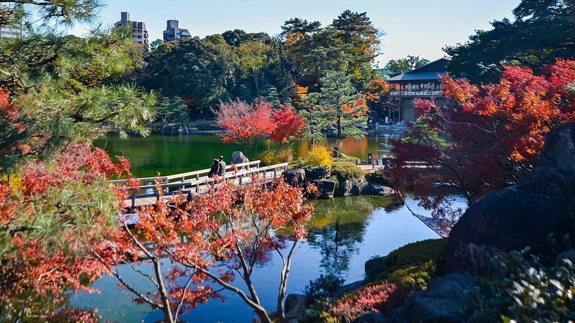

Tokugawa Art Museum
徳川美術館
During the Edo Period (1603-1868), Nagoya served as the seat of the Owari, one of the three major branches of the ruling Tokugawa family. The family amassed great wealth that was only surpassed by four of the 200 feudal domains of the Edo Period. The Tokugawa Art Museum (徳川美術館, Tokugawa Bijutsukan) was built on the grounds of the Owari's former feudal residence and preserves and exhibits several of their treasures including samurai armor and swords, tea utensils, noh masks and costumes, poems, scrolls and maps.
Next to the museum is Tokugawa-en, a beautiful Japanese landscape garden with a large pond at its center. The garden used to be part of a retirement residence of the local lords, but was destroyed during the war. It was restored and reopened to the public in 2004. A large network of walking trails lead around the grounds to a tea house, rest houses, and across several bridges. The garden is best in spring, when its Peony (mid to late April) and Iris gardens (late May to early June) bloom, and during the autumn season (November).
